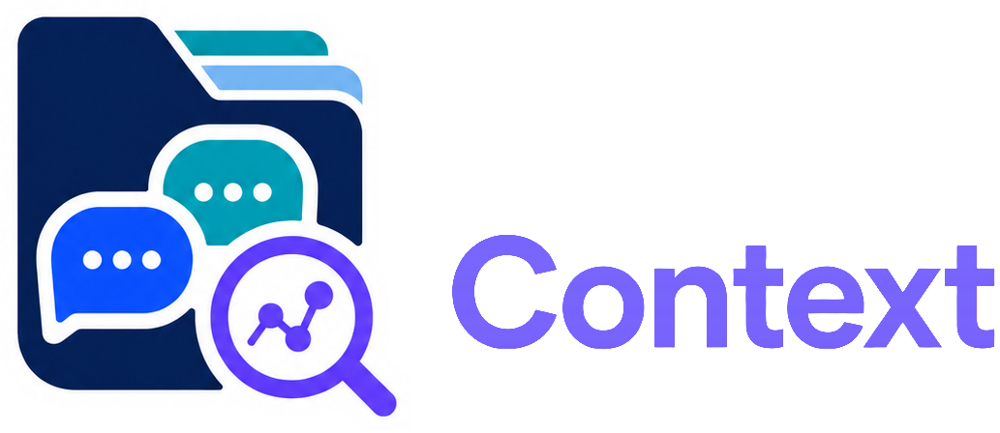
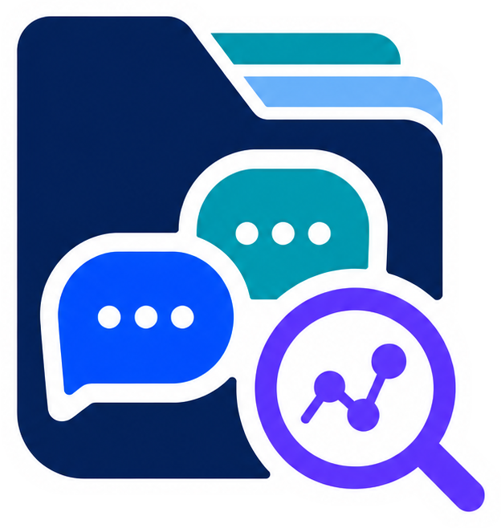

Načítám stav…
Zkuste třeba „Co jsme řešili ohledně termínu?“
PŘEHLED DATABÁZE
Statistiky, metadata a vektorové chunky.
DETAIL DATABÁZE
PODKLADY ODPOVĚDI
MODELY A API
Správa modelů, providerů a datového workspace.
Spravujte připojení k AI službám a jejich šifrované přístupové klíče.
API klíč providera používá chat i embedding/indexing. Klíče jsou uložené šifrovaně.
Pro vestavěný OpenAI vložte projektový OpenAI API klíč. Renderer jej po uložení už nezobrazí.
Vyberte modely a jejich reasoning effort, které budou dostupné ve výběru pod chatem.
Aktivní připravený index určuje vektorové vyhledávání v chatu.
Dokončené, zrušené a neúspěšné úlohy. Aktivní průběh zůstává v pravém panelu.
Připojení, model odpovědí, oprávnění serverů a audit odpovědí.
Spravujte časovou zónu a v desktopové aplikaci také aktivní datový cíl.
Načítám aktivní cíl…
Vzdálené připojení používá Chat Context server. Desktop API token musí odpovídat hodnotě CHAT_CONTEXT_DESKTOP_TOKEN v jeho souboru .env.
CHAT_CONTEXT_DESKTOP_TOKEN
.env
Přeneste raw zprávy a Discord synchronizační stav na vybraný server.
Konverzace „“ bude trvale odstraněna.
Tato akce nevratně odstraní všechny chunky, vektory a metadata. Discord přihlášení zůstane zachované.